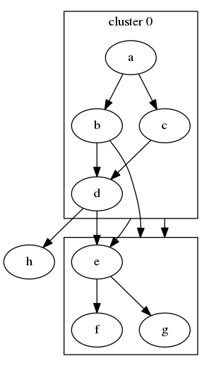
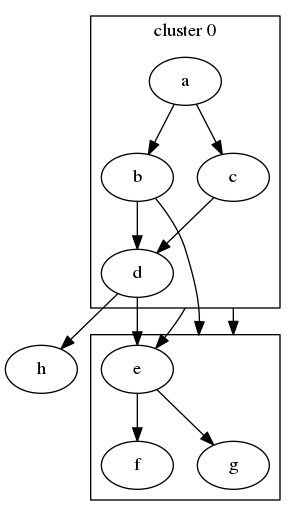

Targets and applications¶
The IOTarget class¶
Snakemake identifies rule input and output dependencies by means of
file name patterns. Inputs and outputs are defined via the
snakemake.io.IOFile class which uses python mini format
strings to setup regular expressions for string matching. Typically,
an input is of the form {prefix}.suffix and the output
{prefix}.outsuffix.
The snakemakelib.io.IOTarget class adds an interface to
define in more detail what the common prefix should look like. Inputs
and outputs relating to a given unit (e.g. sample) can be identified
by a common file name prefix. The basic idea of
IOTarget is to assign regular expression
groups to the string prefixes themselves. Take for example an input
file called foo_bar.fastq.gz which when aligned to a reference
sequence generates an output file called foo_bar.bam. One way to
identify the unit is to simply assign a regular expression to
foo_bar, such as [a-z_]+. This construct would correspond to
the prefix wildcard in the previous paragraph. Alternatively, one
could assign regular expressions to foo and bar separately by
([a-z]+)_([a-z]+).
By using the construct (?P<name>...) the substring matched by a
group is accessible via the symbolic group name name.
snakemake.io.IOFile uses these constructs together with the
python mini format language for generating regular expression groups
in a readable way. Instead of writing (?P<name>...) one simply
writes {name...}. Consequently, one could assign group names to
foo and bar in the previous section by for instance writing
{SM,[a-z]+}_{PU,[a-z]+}, with foo being identified by the
SM group, and bar by the PU group, as the following code
block shows:
>>> from snakemakelib.io import IOTarget
>>> target = IOTarget("{SM,[a-z]+}_{PU,[a-z]+}")
Although any group names can be used, wherever applicable
snakemakelib uses read group identifiers as defined by the SAM
format specification. An excerpt from the
description follows below:
RG
Read group. Unordered multiple @RG lines are allowed.
ID*
Read group identifer. Each @RG line must have a unique ID. The
value of ID is used in the RG tags of alignment records. Must be
unique among all read groups in header section. Read group IDs may
be modified when merging SAMfiles in order to handle collisions.
...
PU
Platform unit (e.g. flowcell-barcode.lane for Illumina or slide
for SOLiD). Unique identifier.
SM
Sample. Use pool name where a pool is being sequenced.
Throughout, then, SM is used to identify the sample unit, PU
the platform unit, and so on.
Sample organization¶
Since Snakemake rule definitions make use of wildcards already, you
may wonder what the use of IOTarget is. The main reason is that
sequencing data from different sources have different naming
conventions. The file names often carry metadata about the sample
and/or sequencing run, but since naming conventions differ, they would
need to be parsed differently depending on the source. The
IOTarget class takes care of this issue, thus enabling reuse
of rules that use generic prefix names, such as snakemake-rules.
To give an example, consider the following two input files:
GSM123456/SRR123456_1.fastq.gz
P001_101/121014_AC003CCCXX/1_121014_AC003CCCXX_P001_101_1.fastq.gz
A typical alignment rule would treat everything up to the read index
(_1) as the prefix. The metadata that is encoded in the filenames
would be lost, however. For instance, GSM123456 corresponds to a
GEO accession number and
SRR123456 to a SRA Run Accession (SRR).The
second example corresponds to a file name as delivered by NGI
Stockholm (Genomics Production). Here,
P001_101 is a sample, 121014 the date, and so on.
The module snakemakelib.sample.organization contains submodules
that define IOTarget objects for use in typical cases. The objects
are used to parse the prefixes for extraction of metadata information.
Upon importing a submodule, the configuration setting
config['settings']['sample_organization'] is set to a
SampleOrganization
object that defines IOTarget objects for different input
organization levels (see
Organization levels for more
information).
As an example, importing config from
snakemakelib.sample.organization.sample_run_sra gives
>>> from snakemakelib.sample.organization.sample_run_sra import config
>>> config
{'samples': [],
'settings': {'sample_organization': SampleOrganization(raw_run_re='{SM,[a-zA-Z0-9]+}/{SM}', run_id_re='{SM,[a-zA-Z0-9]+}/{SM}', sample_re='{SM,[a-zA-Z0-9]+}/{SM}')}}
whereas importing config from
snakemakelib.sample.organization.illumina_scilife produces:
>>> from snakemakelib.sample.organization.illumina_scilife import config
>>> config
{'samples': [],
'settings': {'sample_organization': SampleOrganization(raw_run_re='{SM, P[0-9]+_[0-9]+}/{DT, [0-9]+}_{PU1, [A-Z0-9]+XX}/{PU2, [0-9]}_{DT}_{PU1}_{SM}', run_id_re='{SM, P[0-9]+_[0-9]+}/{DT,[0-9]+}_{PU1,[A-Z0-9]+XX}/{PU2,[0-9]}_{DT}_{PU1}_{SM}', sample_re='{SM,P[0-9]+_[0-9]+}/{SM}')}}
Organization levels¶
You may have noticed that
SampleOrganization
has three IOTarget objects referenced by
raw_run_re, run_id_re and sample_re.
![digraph orglevels {
graph[bgcolor=white, margin=0];
node [shape=box, style=rounded, fontname=sans, fontsize=10, penwidth=2];
edge[penwidth=2, color=grey];
rawid1 -> runid1
rawid2 -> runid2
rawid3 -> runid3
runid1 -> sample1
runid2 -> sample1
runid3 -> sample2
subgraph "raw_run_re" {rawid1; rawid2; rawid3; label="Raw run-level names"; }
subgraph "run_id_re" {runid1; runid2; runid3; label="Run-level names"; }
subgraph "sample_re" {sample1; sample2; label="Sample-level names"; }
}](../_images/graphviz-18d471bf90dcc725607833ef76a8e87342f64c0b.png) 
